Cities are losing their cool.
Scroll to follow the heat


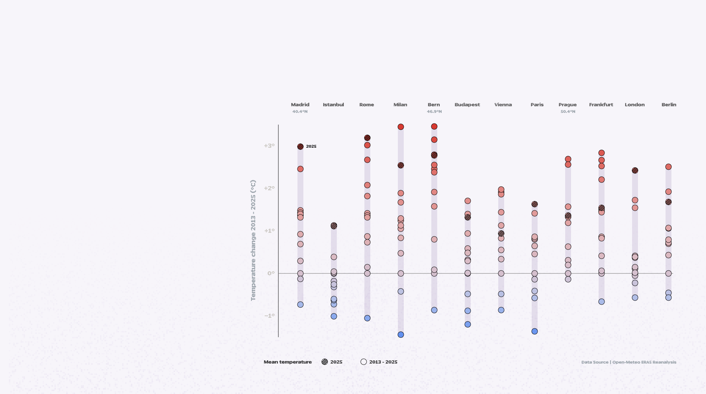
Temperature records are continuing to break across Europe, with higher temperatures to come.
Chart: a dot plot of temperature change (2013–2025, °C) for twelve European cities — Madrid, Istanbul, Rome, Milan, Bern, Budapest, Vienna, Paris, Prague, Frankfurt, London and Berlin. Each city shows a vertical spread of yearly points from about −1°C to +3°C; warmer (red) points sit well above the cooler-coloured historical baseline, with the 2025 mean marked as a hatched point. Source: Open-Meteo ERA5 Reanalysis.
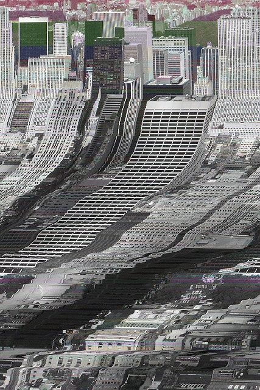
Among Europe's hardest-hit cities, Frankfurt illustrates how extreme heat is becoming an urban challenge.
Four key factors that turn the city into a heat trap.
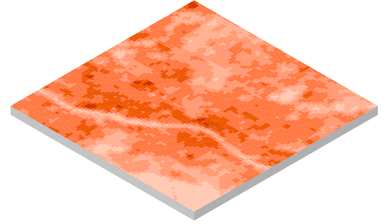
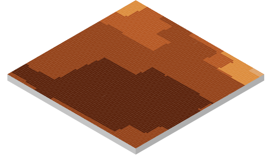
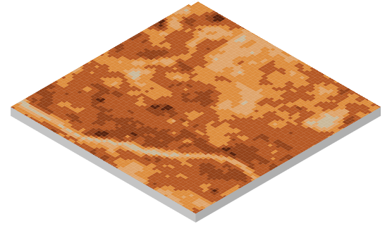
Daytime Land Surface Temperature (LST Day)
Nighttime Land Surface Temperature (LST Night)
Physiological Equivalent Temperature (PET)
Tropical Nights
The temperature of the surface itself: asphalt and concrete absorb solar radiation and reach temperatures far above the surrounding air.
How much heat the surface releases after dark. Sealed materials cool slowly, keeping temperatures still elevated during the night.
A single measure of thermal stress at street level, combining solar radiation, wind, humidity and surface heat into one number.
Nights where temperatures never drop below 20°C.
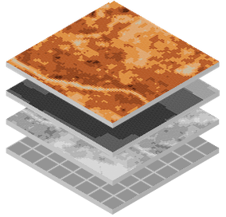
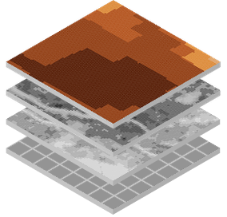
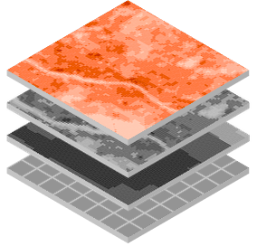
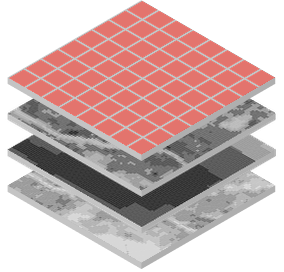
How hot does the
ground get during
the day?
How hot is the
ground during the
night?
What temperature
does your body
really feel?
What happens
during the night?

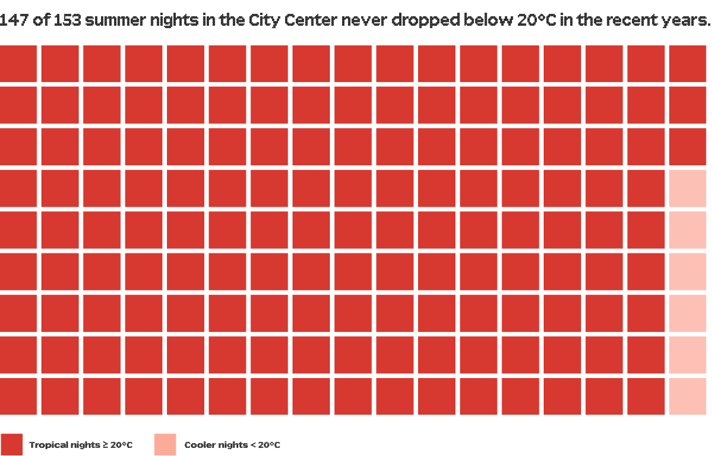
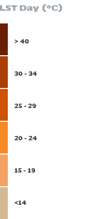
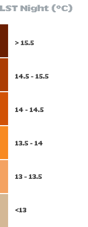
Surfaces drive the urban heat island effect. Dark asphalt, concrete pavements and rooftops absorb solar radiation throughout the day, reaching Lands Surface Temperatures (LST) over 20°C higher than nearby green spaces. The denser and more sealed the urban fabric, the more intense the heat accumulation.
The Main cuts through the city as a cool thread, but its banks are sealed solid. Without green cover at street level, the river's natural cooling cannot reach beyond its edges.
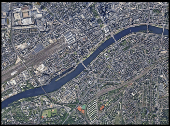
The map shows how surfaces release heat after dark. Though the satellite resolution differs, the pattern holds: sealed materials cool slowly, keeping Land Surface Temperatures (LST) elevated throughout the night.
Heat Stress
At Physiological Equivalent Temperature (PET) values above 35°C, the human body struggles to maintain thermal balance. Blood pressure rises, sleep is disrupted and the risk of heat stroke increases sharply, hitting elderly residents and children the hardest.
PET is shaped by the urban environment. Where concrete and asphalt dominate, felt heat stress rises sharply. The two maps tell the same story from opposite angles: areas with high green volume consistently show lower PET values, while sealed surfaces with little to no vegetation overlap directly with the most extreme thermal stress zones.
Green spaces cool cities by day, but that relief weakens after dark. A TROPICAL NIGHT occurs when the temperature never drops below 20°C, even at 3am. For the human body, that means nor rest, neither reset before the next day of heat begins again.
Daytime Land Surface Temperature (LST Day)
Physiological Equivalent Temperature (PET)
Nighttime Land Surface Temperature (LST Night)
Tropical Nights
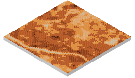
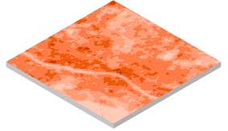
combined
combined
Day time Composite
Night time Composite
Hotspots
A land area notably warmer than its surroundings, often linked to vegetation loss or urbanization, a target for cooling action.
Coldspots
A land area notably cooler than its surroundings, often linked to forests or water bodies, a natural asset worth protecting.
Classification of Hotspots & Coldspots
Classification. The four thermal composites — daytime land-surface temperature, physiological equivalent temperature, night-time land-surface temperature and tropical nights — are combined into a daytime composite and a night-time composite, then cross-classified into a map of Hotspots and Coldspots. Hotspots are areas notably warmer than their surroundings; coldspots are notably cooler. The six-category legend runs from a universal hotspot (hot day and night) through the moderate categories to a universal coldspot (cold day and night).
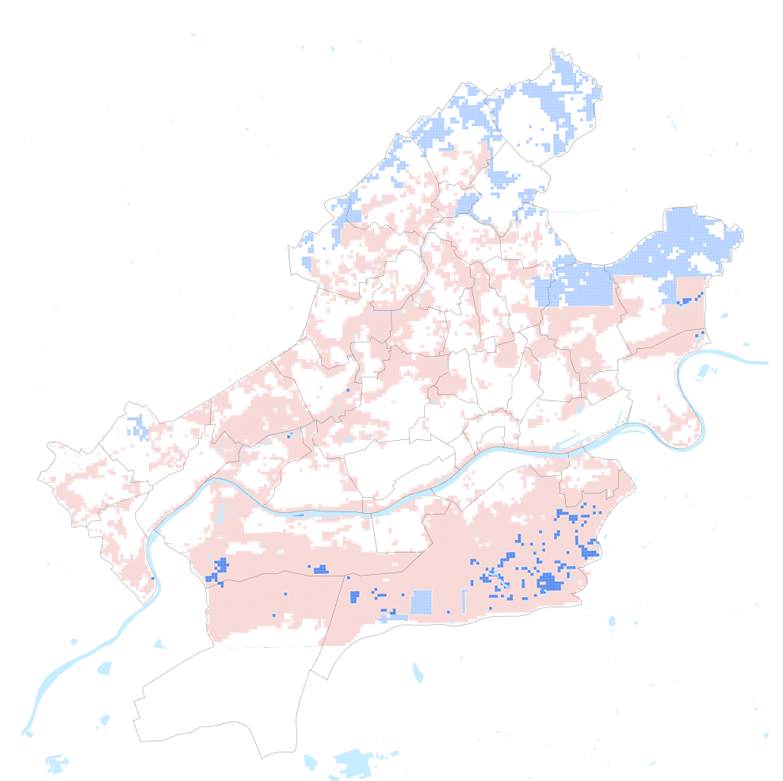
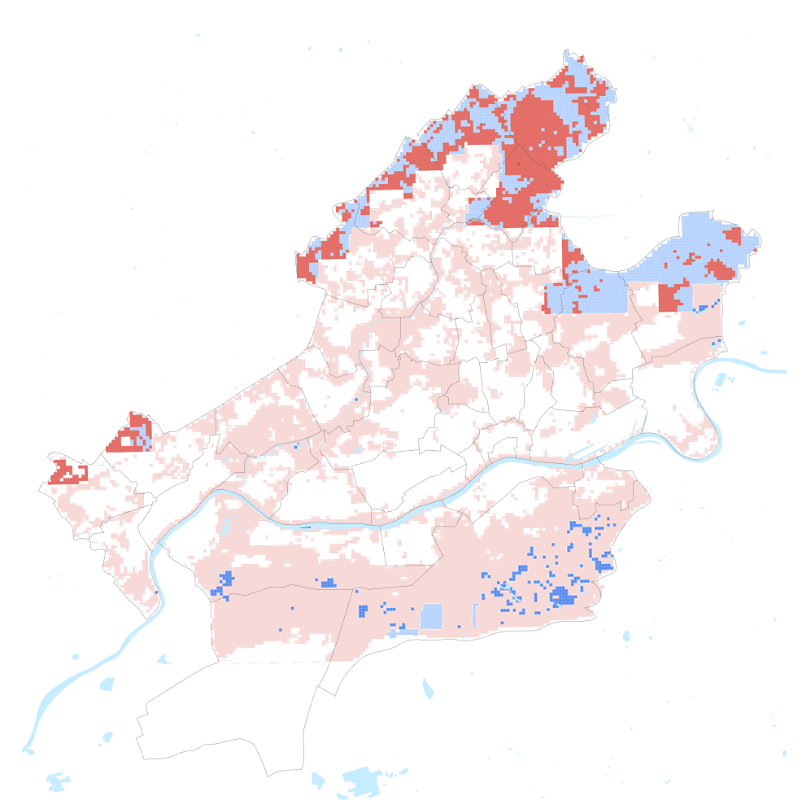

Frankfurt’s thermal landscape
Measured across a ten-year average (2013–2022) at 100 m resolution, the combined map shows areas that heat up and stay hot from those that are cold and / or cool down after dark.
Universal coldspots no longer exist in Frankfurt, it has been entirely lost to urban development.
The rarest surviving coldspot in Frankfurt. Surfaces that stay measurably cool during the day but lose their cooling capacity at night. Almost exclusively found in the green corridors of the city.
Moderate daytime temperatures with efficient nocturnal cooling. Mixed surfaces (parks, gardens, low-density residential areas) where the city still breathes after sunset.
Neither extreme hotspot nor coldspot — transitional urban fabric that absorbs heat moderately during the day and releases it slowly at night.
Surfaces that overheat intensely during the day but cool down at night. Typically commercial or industrial zones with high solar absorption but enough airflow and spacing between buildings to allow nocturnal heat release.
The most thermally stressed category. Dense sealed surfaces that accumulate heat during the day and never fully release it at night. Exactly where the city burns.
Glass towers, sealed plazas and almost no street-level greenery turn Frankfurt’s financial district into a heat trap: surface temperatures above 38°C by day and more than 140 tropical nights a year that never let the heat go.
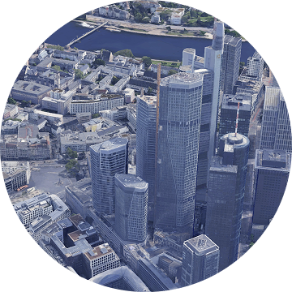
On the southern edge of the city, the green corridor offers a different thermal experience. Dense tree canopy and almost none population density combine to keep surface temperatures noticeably lower, both day and night.
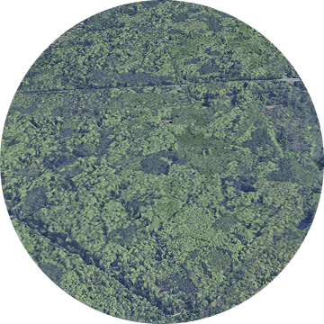
The numbers behind the difference.
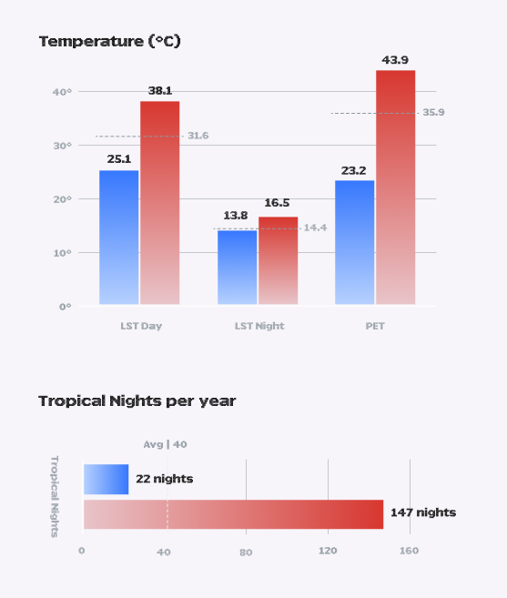
Across every thermal variable, the gap between Frankfurt’s two extremes is striking. The City Center reaches a felt temperature of 43.9°C and endures 147 tropical nights a year, while the coldspot in Sachsenhausen-Süd peaks at 23.2°C PET and only 22 tropical nights. The dashed line shows where Frankfurt’s average sits: closer to the hot end than the cool one.
Frankfurt’s thermal data makes the urgency visible: the scarcity of blue pixels on the map is not just a statistical observation, it is a WARNING!
Frankfurt's thermal landscape, a ten-year average (2013–2022) at 100 m resolution. A single combined map is read in six passes, from the coolest category to the hottest. Universal coldspots (cool day and night) have been entirely lost to urban development. The surviving cool categories — cold days with warmer nights, and moderate days that still cool efficiently after dark — are almost all in the city's green corridors. Transitional fabric absorbs heat moderately and releases it slowly. At the hot end, surfaces that overheat by day but cool at night give way to universal hotspots: dense sealed surfaces that stay hot day and night — exactly where the city burns. The map then zooms to the two extremes: the Inner City financial district, the hottest spot, with surface temperatures above 38°C by day and more than 140 tropical nights a year; and Sachsenhausen-Süd on the southern edge, the coldest spot, a green corridor of dense tree canopy and almost no population density that stays noticeably cooler day and night.
% of total urban area per thermal class
Frankfurt is losing its cool
… and it’s not alone. Coldspots are vanishing across major European cities.
Conclusion: Frankfurt is losing its cool — and it is not alone; coldspots are vanishing across major European cities. By share of total urban area per thermal class: 39.4% is a universal hotspot and 7.4% is hot by day, 43.7% is moderate with warmer nights, only 8.4% stays cool, and just 1.2% is a universal coldspot. Once a coldspot is sealed — paved over, built upon or stripped of its vegetation — it does not recover on a human timescale, yet urban development consistently targets these zones. Without political will and explicit protection in city planning, coldspots will keep shrinking as cities grow.
Data Sources
Thermal & Classification Data Klimaatlas Hessen – KIT (Karlsruhe Institute of Technology) & Hessian Ministry for the Environment, Climate Protection, Agriculture and Consumer Protection (HMUELV) · LST, PET, Tropical Nights, Hot & Coldspot classification · 100 m grid · 2013–2022 · geodatendienste-umweltplanung-hessen.de
Green Infrastructure Blau-Grüne Indikatoren Hessen – Klimaatlas Hessen WFS · Green volume per 100 m² pixel
Administrative Boundaries Gemeindegrenzen Hessen – Klimaatlas Hessen WFS · Municipal boundaries
Satellite Imagery Landsat 8/9 – USGS / NASA · Sentinel-2 – ESA Copernicus
Credits
Shashank Patel, Julia Sabá, Mona Euchenhofer